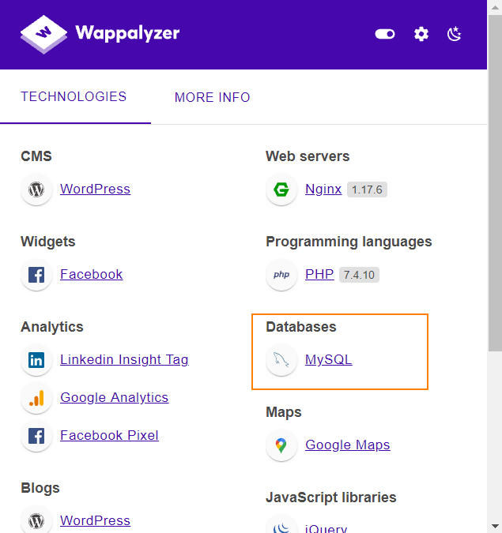

Identify Database Type
Wappalyzer
(
https://github.com/AliasIO/wappalyzer
)
To identify the database in use from a Website we can use
WappAlyzer
It is an extension that can give us information about the
technologies used by the Website
Wappalyer is an open source project
that
• use regular expressions(
https://github.com/AliasIO/wappalyzer/blob/master/src/technologies/) to detect technologies.
• To validate these regular expressions
wappalyzer check: 'url', 'html', 'meta',
'headers', 'cookies', 'script', 'js' as we
can see here (
https://github.com/AliasIO/wappalyzer/blob/2401457a994f40f23140b62e406590bdaa0476a2/bin/validate.js)
